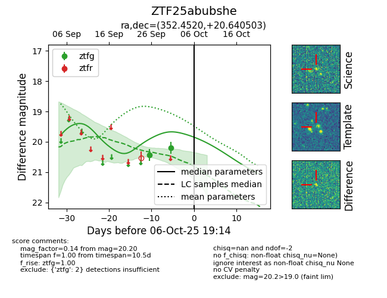
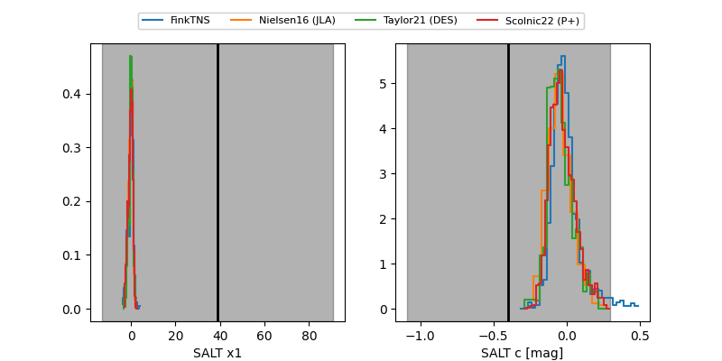

FINK: ZTF25abubshe
Lasair: ZTF25abubshe
ALeRCE: ZTF25abubshe
ZTF25abubshe (ztf,fink)
equatorial (ra, dec) = (352.4520,+20.64050)
galactic (l, b) = (98.3602,-38.30527)


last ztfg=20.20
2 ztfg detections